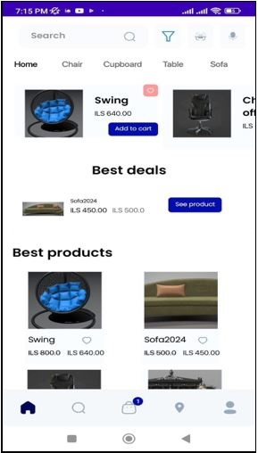

About Me
I love the darkness. I feel that when I close my eyes, I connect with myself and return to my essence. It's as if my vision and the senses through which I perceive the external world prevent me from looking inside myself and observing my thoughts. Darkness is a blessing, much like another blessing—the human's limited capacity to encompass and understand all things. I love the darkness, for it is the source of light, and without darkness, there would be no light.
Projects
- Home Sweet Home
- Chem hero

Home Sweet Home app, is an innovative and user-friendly furniture store application. With the aim of revolutionizing the furniture shopping experience, this app offers a range of features and tools that redefine how users explore, select, and purchase furniture items.
Chem hero is an educational game for kids above the age of 13, aimed to educate in the science of chemistry. Where the player can learn the periodic table symbols and names, along with the chemical reactions and their names that occur when mixing. PLAY NOW!♥